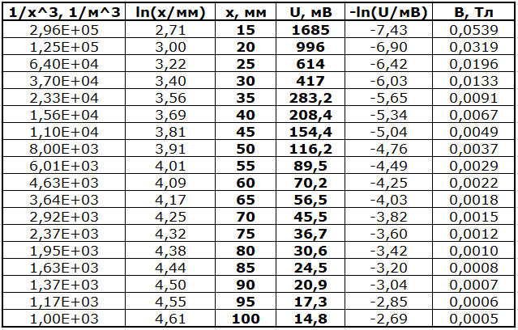
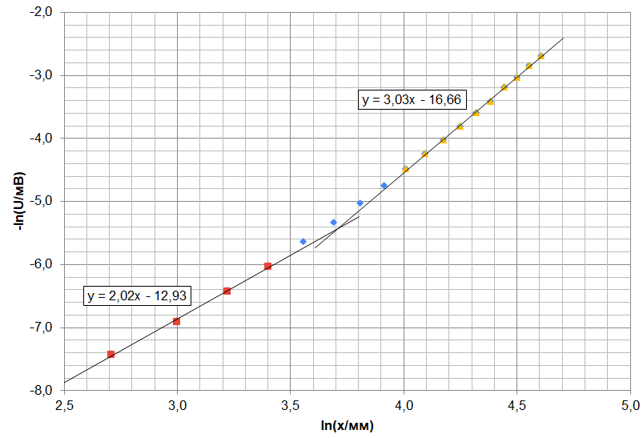
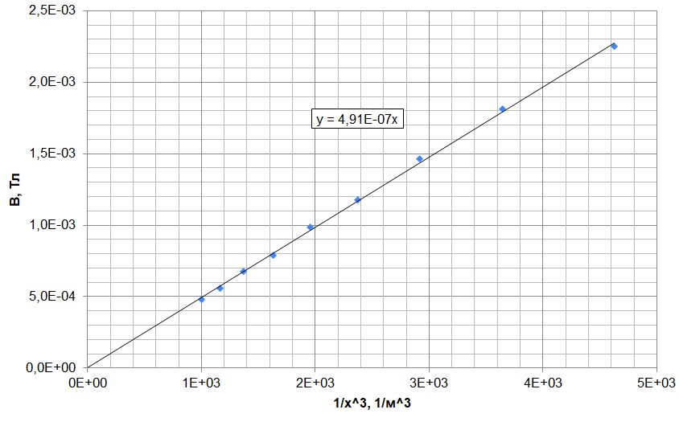
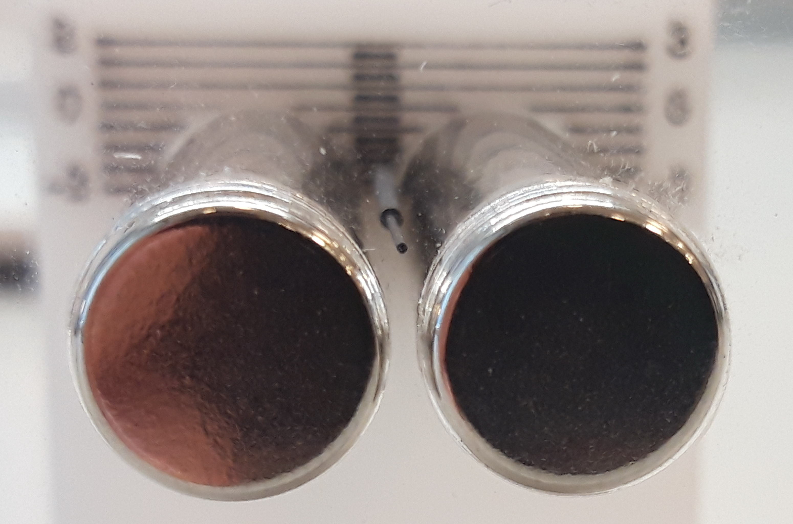
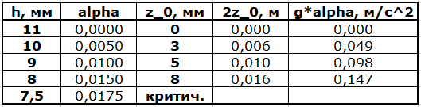
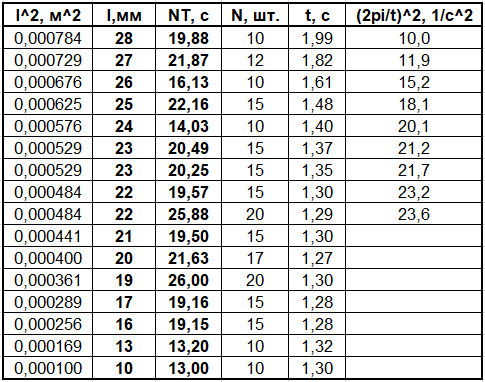
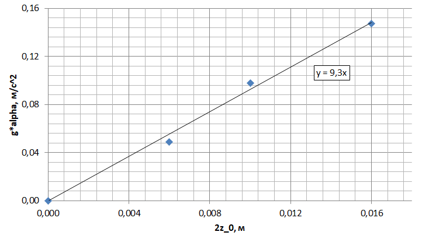
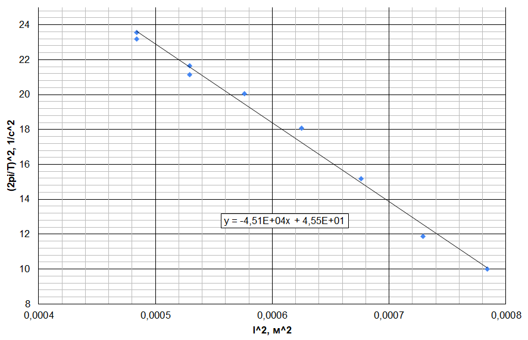
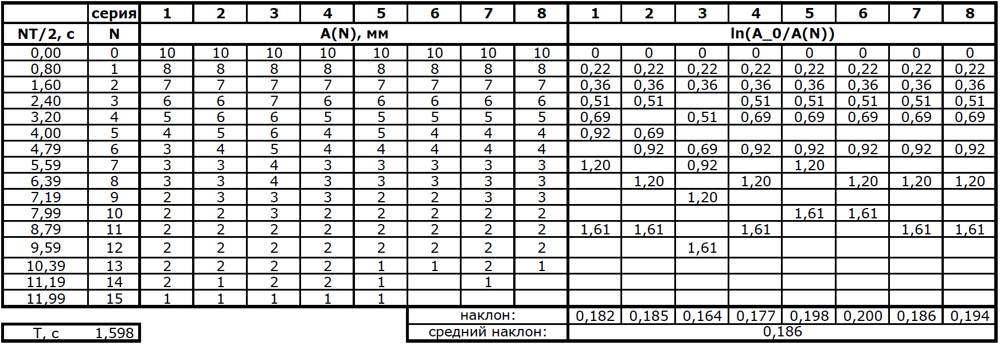
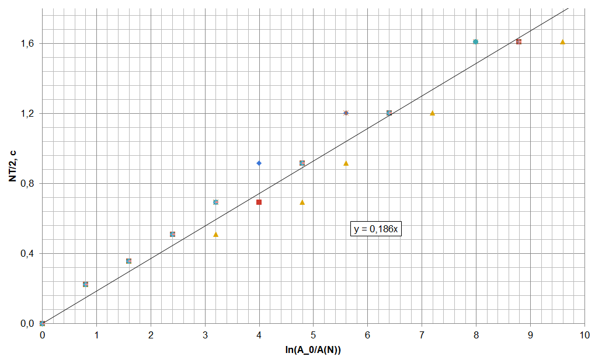

X23 (2023) — English translation
We fix the magnet in the stands and fix them on the table using adhesive mass. Let's place the sensor on the table at the height of the magnet at some distance from it. By rotating the magnet around its axis, we will achieve maximum voltmeter readings. This will ensure the correct orientation of the $Ox$ axis and its passage through the sensor. Let's remove the dependence $U(x)$.

The general formula $\vec B \left(\vec r \right) = \cfrac{\mu_0}{4\pi}\cfrac{3(\vec m \cdot \vec r)\vec r - \vec m r^2}{r^5}$ in the case of $\vec m \upuparrows \vec r$ simplifies to the form $B(x)=\cfrac{\mu_0}{4\pi}\cfrac{2m}{x^3}$.
The points of the graph corresponding to $x \in [15; 30]~\text{mm}$ fit well on a straight line with a slope coefficient $n = 2.02 \approx 2$, points at $x\in [55;100]~\text{mm}$ - on a straight line with a slope coefficient $3.03 \approx 3$, as for a point dipole. The nature of the dependence changes in the vicinity of $x_{crit}\approx 35~\text{mm}$.

Using the sensitivity of the sensor $k = 31.25~\text{V}/\text{T}$, we calculate the values of the field $B$. Let's construct a graph for large $x\geq60~\text{mm}$, where the previous graph shows that the points fit well on the second straight line. The slope coefficient $\beta$ of the graph $B$ from $1/x^3$, based on the theoretical formula, is $\beta= \cfrac{\mu_0 m}{2\pi} = \cfrac{\mu_0 \pi R^2 L}{2\pi} = \cfrac{\mu_0 MR^2 L}{2}$. According to the schedule, we determine $\beta=4.91 \cdot 10^{-7}$, from where $M=\cfrac{2\beta}{\mu_0 R^2 L}=7.81\cdot10^5~\text{A}/\text{m}$.

Measurements of $h$ for all four available $d$ give the same result, determined very roughly due to the large relative error: $h(d)=(2.5 \pm 0.5)~\text{mm}$. Within the limits of measurement accuracy, there is no dependence on $d$. To illustrate that $h$ does not depend on $d$, we can place several different leads one after another in the “trough” and make sure that they line up in one line.

The stylus is magnetized in the field of magnets and repels from them, trying to move to a position with a lower value of the magnet field $B$. This means that graphite is diamagnetic.
$F = -\cfrac{dU}{dy} = -\cfrac{d \left( -\cfrac{1}{2}(\vec m \cdot \vec B) \right)}{dy} = \cfrac{1}{2} \cfrac{2}{\mu_0} \cfrac{\chi}{\chi + 2} \pi r^2 l \cdot \cfrac{d}{dy} B^2 (y)$
We substitute into the resulting formula $F(y)$ the explicit form of the function $ B(y) = \cfrac{\mu_0 M R^2}{a^2} \cdot \cfrac{1-u^2}{\left( 1+u^2 \right) ^2}$, where $u=\cfrac{y}{a}$. To take the derivative, it is convenient to write $ \cfrac{d}{dy} B^2 (y) = \cfrac{du}{dy} \cdot \cfrac{d}{du} B^2 (u) = \cfrac{1}{R} \cdot \cfrac{d}{du} B^2 (u) = \cfrac{1}{R} \cdot \cfrac{4u(1-u^2)(3-u^2)}{(1+u^2)^5}$. We arrive at the final answer:
In the equilibrium position of the stylus (with measured $h$), we can write that the sum of forces along the vertical axis is zero: $$F(u)-m_0g = -\cfrac{\chi}{\chi+2} \cfrac{\pi r^2l \mu_0 M^2R^4}{a^5} \cfrac{4u(1-u^2)(3-u^2)}{(1+u^2)^5} - m_0 g = 0,$$ where $m_0 = \rho \pi r^2 l$. It can be seen that $r$ сокращается, therefore теоретически подтвержgivesся, что положение equalsвесия $h$, косвенно входящее в эту формулу, не зависит от diameterа грифеля $d$. Substituting $u=0.435$, $M=7.81\cdot10^5~\text{A}/\text{m}$ and for/atведенные в условии величины, we get отрицательное численное value $\chi=-2.6\cdot 10^{-4} < 0$, что соответствует диамагнитному материалу. For оценки погрешности можно воспользоваться методом границ and подставить $h_{min} = 2.0~\text{mm}$ and $h_{max}=3.0~\text{mm}$. Taking into account значений $\chi$, поrayающихся for/at таких $h$, we can write:
We will tilt the table by tightening one of the support screws. By measuring the height at which the edge of the table closest to this screw is, we find the corresponding inclination of the table $\alpha=\cfrac{|h_{\alpha}-h_{\alpha=0}|}{\approx 20~\text{cm}}$. As the table tilts, the equilibrium position of the stylus gradually shifts to the support located lower on the slope. At $\alpha_{crit}\approx0.0175~\text{radиан}$ the equilibrium position disappears, the stylus stops oscillating and one of its ends rests against the support of the magnet stand.

With a slope $\alpha_{crit}$, the difference in specific potential energies in the magnetic field between points $z=0$ and, for example, $z_0(\alpha_{crit})$, is compensated by the difference in specific potential energies in the gravitational field. As a result, the “dip” of potential disappears, the equilibrium position no longer exists, and the stylus moves to the position of the minimum total potential - near the support. Thus, we can estimate $\Delta U \sim g\alpha_{crit}z_0(\alpha_{crit}) = 1.4~\text{mJ}/\text{kg}$, where $z_0(\alpha_{crit}$ is the last measured equilibrium position before the stylus flies away to the support. A more accurate estimate is through the value $z_{max}=14~\text{mm}$ calculated in point C4 - the position of the “hump” of the potential: $\Delta U \sim g\alpha_{crit}z_{max} = 2.4~\text{mJ}/\text{kg}$.
To increase the accuracy of determining $T$ we will measure the value $NT$ - the total time $N$ of oscillations. It is wise to choose $N\sim10...20$ because with $N>20$ the vibrations are almost imperceptible due to viscosity, and the final vibrations are almost impossible to measure.

For lengths greater than $l_{max} =28~\text{mm}$, the position of stable equilibrium disappears. This happens because the ends of the stylus find themselves in areas of a very sharply decreasing magnetic field potential, and when the stylus is displaced, it is energetically favorable for the stylus to completely move away from the equilibrium position towards one of the supports.
The total potential energy due to the magnetic and gravitational fields is equal to $U_{\text{поLн}}(z) \approx c_0+c_2z^2+g\alpha z$. Correction $c_4z^4$ can be neglected here, as discussed earlier. This neglect is also justified by the linearity of the resulting linearized graph. Equilibrium position – minimum total potential energy: $\cfrac{dU_{\text{поLн}}}{dz} \Bigg|_{z_0} \approx 2c_2z_0 + g \alpha = 0$. For linearization, we can plot $g \alpha$ against $2z_0$, then $c_2$ will be its slope coefficient.

Let the stylus be displaced relative to the equilibrium position by a small distance $\Delta z$. The change in its potential energy in a magnetic field compared to the equilibrium position is equal to $$\Delta W = \rho \pi r^2 \Delta z \left(U\left(-\cfrac{l}{2}+\cfrac{\Delta z}{2}\right) - U\left(\cfrac{l}{2}+\cfrac{\Delta z}{2}\right) \right) =\rho \pi r^2 \Delta z \cdot \left( \cfrac{dU}{dz} \Bigg|_{z=l/2} \cdot \Delta z\right)=$$ $$= \rho \pi r^2 (\Delta z)^2 \cdot (2c_2z+4c_4z^3)\Big|_{z=l/2}=\cfrac{\rho \pi r^2 l (\Delta z)^2}{2}\cdot (2c_2+c_4l^2) $$. Kinetic energy грифеля at the same time equals $K=\cfrac{\rho \pi r^2 l \cdot \dot{(\Delta z)}^2}{2}$. From energy conservation it follows $dW+dK=0$: $$\cfrac{\rho \pi r^2 l\cdot 2(\Delta z) \dot{(\Delta z)}}{2}\cdot (2c_2+c_4l^2) + \cfrac{\rho \pi r^2 l \cdot 2\dot{(\Delta z)}\ddot{(\Delta z)}}{2}=0.$$ Это expression можно сократить на $\rho \pi r^2 l\cdot \dot{(\Delta z)}$, останется: $$\ddot{(\Delta z)}=-(2c_2+c_4l^2) \cdot (\Delta z).$$ Hence the oscillation period:
To linearize the dependence at large lengths $22~\text{mm} \leq l \leq28~\text{mm}$, where the correction $c_4 z^4$ appears and the period significantly depends on $l$, we construct the dependence $\left( \cfrac{2\pi}{T} \right) ^2$ on $l^2$. The slope of the graph will be $c_4$ and the intercept will be $2c_2$.

If the resistance force is determined by the expression $F_{\text{sопр}}/m = -\gamma \dot z$, then the vibration equation is written in the form $\ddot z + \gamma \dot z + \omega_0^2 z = 0$. The solution to this equation is harmonic oscillations with an amplitude that decays with time as $A(t)=A_0 e^{-\cfrac{\gamma}{2}t}$. The amplitude depends on the vibration number: $A(N)=A_0 e^{-\cfrac{\gamma}{2}NT}$. For linearization, you can plot the dependence of $\ln\left(\cfrac{A_0}{A(N)}\right)$ on $\cfrac{NT}{2}$, its slope coefficient will be equal to $\gamma$. Let's measure the period of oscillations by conducting several series of 10...15 oscillations: $T=1.598~\text{s}$. Let's start damped oscillations by deflecting the stylus from the equilibrium position. We will record all successive amplitude values, observing them from a piece of graph paper inserted into the gap between the magnets. Let's carry out several such “runs”, plotting the corresponding series of points on a linearized graph. If different numbers of oscillations had approximately the same amplitudes, then on the graph we will mark only the average of the numbers. By averaging the slopes of the linear graphs obtained for different series of measurements, we obtain the average value $\gamma \approx 0.19~1/\text{s}$.

